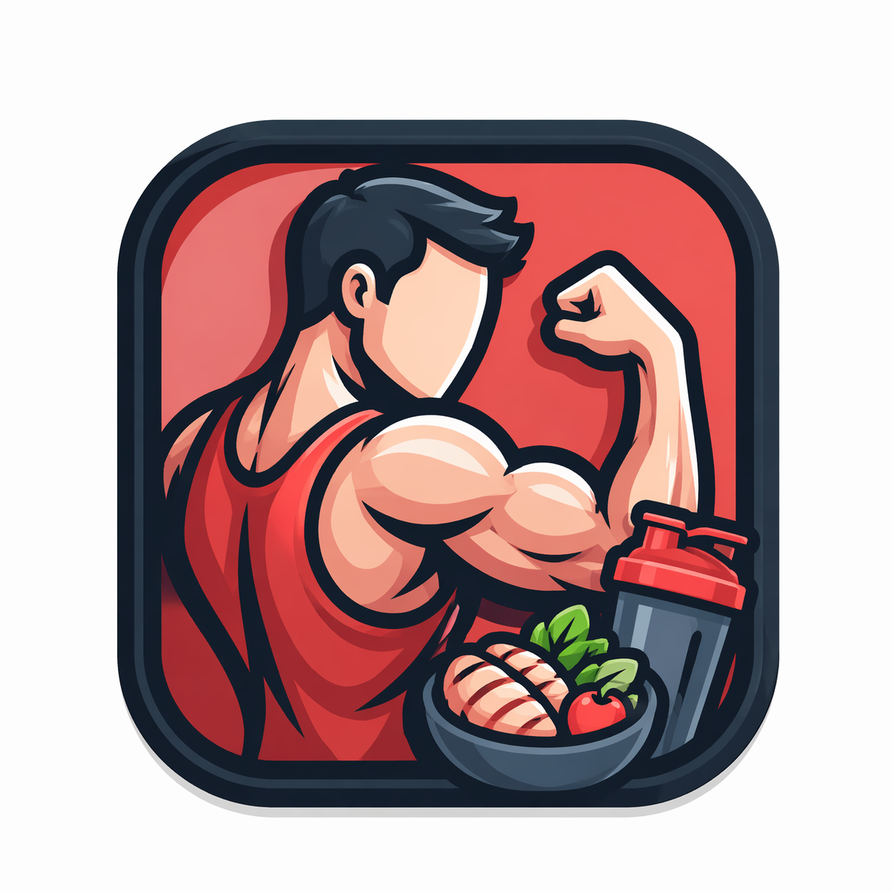
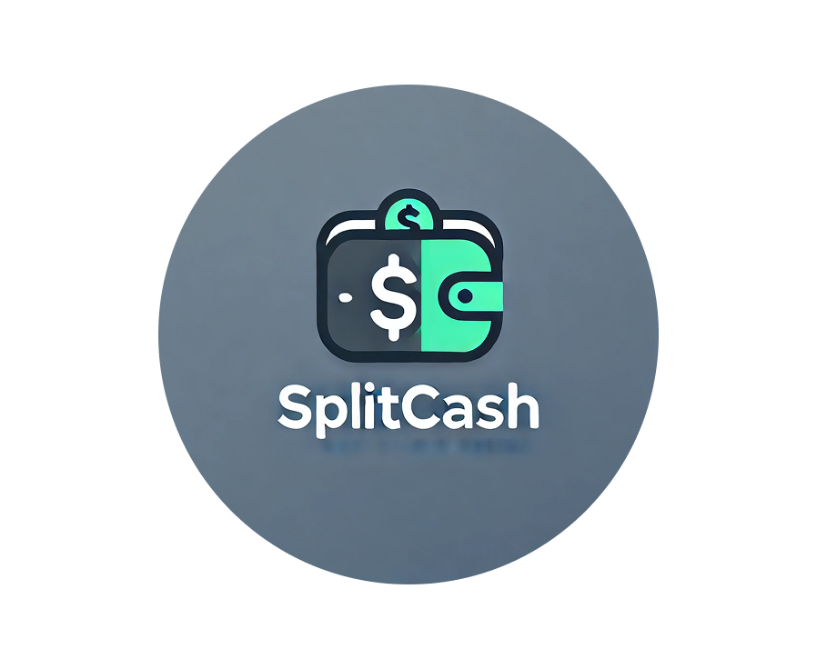

PROYECTOS

Nescafé
Retention DesignDiseñé una app de recetario de café centrada en retención, aplicando Design Thinking desde la investigación hasta el prototipado de alta fidelidad. Iteré sobre la arquitectura de información con base en hallazgos de usabilidad para reducir carga cognitiva e incrementar profundidad de sesión.
TripMind
AI-Driven ProductRediseñé un flujo de reserva de viajes integrando personalización con IA y metodología Lean UX para acelerar ciclos de iteración en Figma. El enfoque estuvo en reducir fricción en el journey de búsqueda y compra para optimizar conversión.

Zentia
Fitness & Wellness UXAlineé funcionalidades del producto con necesidades reales del usuario mediante investigación de descubrimiento. Establecí una jerarquía visual que comunica beneficios de un vistazo y reestructuré categorías de contenido complejo para reducir el esfuerzo de navegación.

SplitCash
Calculadora UIConstruí una interfaz de gestión financiera personalizable priorizando claridad en la toma de decisiones. Estructuré los datos para reflejar distribución de presupuesto en tiempo real, aplicando principios de codificación visual para hacer la información inmediatamente accionable.

Brewster
Automotive DigitalDefiní la jerarquía visual óptima para una plataforma automotriz multi-sección — noticias, storytelling de marca y catálogo. Organicé una base de datos extensa alrededor de un flujo de búsqueda fluido, creando un ecosistema digital que conecta herencia de marca con descubrimiento.